Energy Monitor (EMS) es una plataforma web de monitoreo energetico multi-tenant desarrollada por Grupo Globe.
Permite a empresas de administracion de centros comerciales, edificios y plantas industriales visualizar, analizar y gestionar
el consumo electrico de sus instalaciones en tiempo real.
Proposito
Centralizar la medicion, alertas y facturacion de energia electrica para edificios y operadores, con precision operativa.
Usuarios objetivo
Gerentes de operaciones, ingenieros de mantenimiento, auditores energeticos, ejecutivos, y administradores de facilities.
Escala actual
690 medidores activos, 10 centros comerciales/edificios, 3 tenants (Globe Power, PASA, Siemens), 8 usuarios.
URL de produccion
https://power-monitor.cloud
Capacidades principales
- Dashboard consolidado con mapa geografico, KPIs de consumo y eventos en tiempo real
- Consumo jerarquico: drill-down por pais, mall, zona, local comercial
- Costos y tendencias con proyecciones y comparativas mensuales/anuales
- Sistema de alertas configurables con SLA, tickets y escalamiento automatico
- Monitoreo en vivo de estado de comunicacion de medidores (online/offline)
- Calidad de datos: scorecard de lecturas reales vs esperadas, backfill automatico
- Gestion de CNR (Consumo No Registrado) con workflow de resolucion
- Reportes ejecutivos generables en PDF/PPT/Excel con programacion de envio
- Exportacion de datos con control de alcance segun perfil
- Ordenes de trabajo y registro de intervencion tecnica con firma digital
- Diagnostico de comunicaciones con histograma de disponibilidad 72h
- Mapa de cobertura geografico interactivo
- Administracion multi-tenant: empresas, usuarios, roles, permisos RBAC
- Integracion IoT: auto-discovery de dispositivos via MQTT/IoT Core
- Autenticacion SSO (Microsoft, Google) + Passkey (WebAuthn) + MFA (TOTP)
Arquitectura cloud-native en AWS con separacion frontend/backend y pipelines IoT independientes.
CloudFront (power-monitor.cloud)
|-- /* ----------> S3 (frontend SPA - React)
|-- /api/* ------> API Gateway -> Lambda (NestJS) -> RDS PostgreSQL 16
Siemens POC3000 --> MQTT (IoT Core) --> S3 --> Lambda iot-ingest --> RDS
EventBridge (15min) --> Lambda synthetic-readings --> RDS
Frontend
React 19 + Vite 8 + TypeScript 5.9 + Tailwind v4 + Highcharts Stock 12 + TanStack Query v5 + Zustand 5
Backend
NestJS 11 + TypeORM 0.3 + PostgreSQL 16 + jose (JWT/JWKS)
Infraestructura
ECS Fargate + RDS + S3 + CloudFront + IoT Core + EventBridge + Lambda + SES
Seguridad
JWT 15min + step-up auth + Redis rate limiting + JWT blacklist + WAF + pentest 91/0/22
Fuentes de datos
| Fuente | Protocolo | Frecuencia | Descripcion |
|---|
| PASA | Drive -> S3 -> RDS | Diaria (pendiente) | 875 medidores, billing, datos historicos de centros comerciales |
| Siemens POC3000 | MQTT via IoT Core | Cada 15 min | Lecturas IoT de dispositivos Siemens, auto-discovery |
| Synthetic | EventBridge -> Lambda | Cada 15 min | Lecturas sinteticas para medidores sin comunicacion |
El sistema soporta multiples metodos de autenticacion y control de acceso granular basado en roles (RBAC).
Metodos de login
- Microsoft SSO: via MSAL v5, autenticacion corporativa con Azure AD
- Google SSO: via @react-oauth/google para cuentas personales/corporativas
- Passkey (WebAuthn): autenticacion biometrica sin contrasena (huella, Face ID)
- MFA (TOTP): segundo factor con Google Authenticator / Authy
Perfiles de acceso
| Perfil | Acceso |
|---|
| Super-administrador | Acceso total: todos los tenants, todas las vistas, gestion de usuarios/roles |
| Operacional | Monitoreo en vivo, tickets, ordenes, diagnostico, alertas |
| Ejecutivo | Dashboards, reportes, costos, comparativas (solo lectura) |
| Auditor | Calidad de datos, cuadratura, trazabilidad, evidencia firmada |
| Tecnico | Ordenes de trabajo, intervencion, diagnostico de comunicaciones |
Vista principal del sistema. Muestra un resumen ejecutivo del estado de todo el portafolio energetico:
mapa geografico con estado de sitios, KPIs de consumo, gasto, intensidad y disponibilidad de medidores,
junto con eventos recientes urgentes.
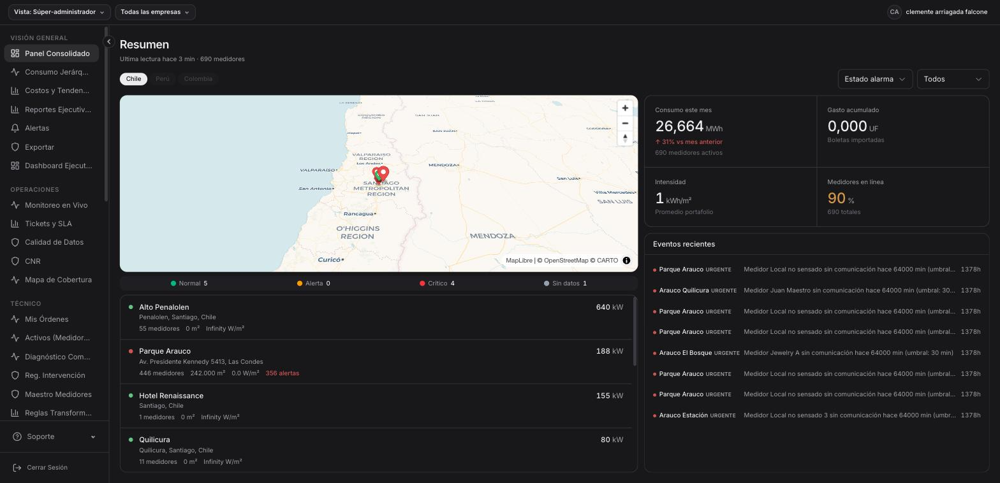
Panel Consolidado: mapa de sitios con indicadores de estado, KPIs globales (consumo mensual, gasto acumulado, intensidad, % online), lista de centros con potencia en tiempo real, y eventos recientes urgentes.
Que muestra
- Mapa geografico: ubicacion de todos los centros con indicador de estado (Normal, Alerta, Critico, Sin datos)
- Consumo este mes: total MWh con variacion porcentual vs mes anterior
- Gasto acumulado: total en UF de boletas importadas
- Intensidad: kWh/m2 promedio del portafolio
- Medidores en linea: porcentaje de medidores reportando
- Lista de centros: cada sitio con cantidad de medidores, superficie, alertas activas y potencia kW en tiempo real
- Eventos recientes: ultimas alertas urgentes con detalle de medidor y tiempo transcurrido
Que consume
API /api/buildings (lista de sitios),
/api/readings/latest (ultima lectura por medidor),
/api/alerts/active (alertas vigentes),
/api/kpis/portfolio (KPIs consolidados).
Filtros por pais (Chile, Peru, Colombia).
Vista de drill-down jerarquico que permite explorar el consumo desde nivel pais hasta medidor individual.
Combina un mapa geografico con un arbol de jerarquia y KPIs por nodo seleccionado.
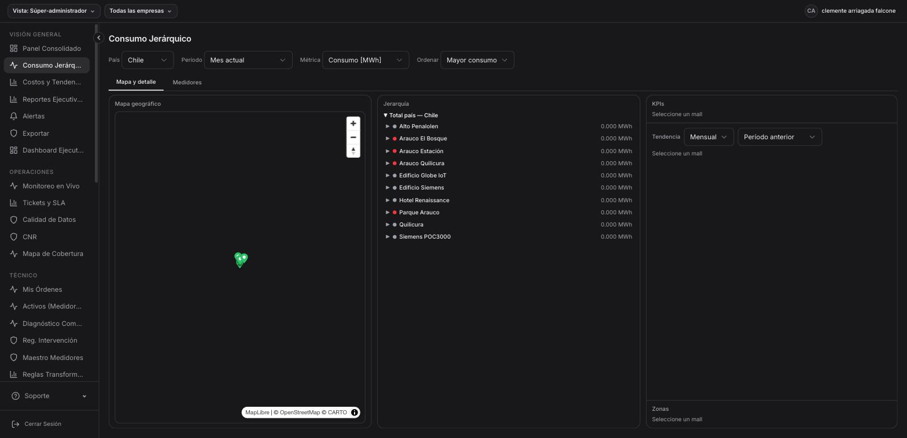
Consumo Jerarquico: mapa geografico a la izquierda, arbol jerarquico expandible al centro (pais > mall > zona > medidor) con consumo MWh por nodo, y panel de KPIs con tendencia mensual a la derecha.
Que muestra
- Mapa geografico: markers de cada mall con zoom interactivo
- Arbol jerarquico: Total pais > Mall > Zona > Medidor, expandible, con consumo MWh por cada nodo
- KPIs: consumo total, tendencia mensual, comparativa con periodo anterior
- Tabs: "Mapa y detalle" (vista principal) y "Medidores" (listado plano)
Filtros disponibles
Pais | Periodo (mes actual, mes anterior, trimestre, ano) | Metrica (Consumo MWh, Potencia kW, Corriente A) | Ordenamiento (mayor/menor consumo)
Analisis financiero del consumo energetico. Muestra tendencias de costos, variaciones,
comparativas por mall y proyecciones de gasto.
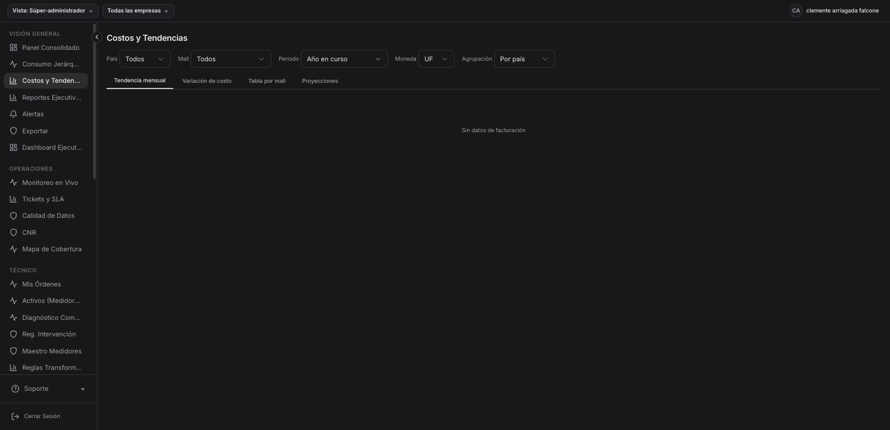
Costos y Tendencias: filtros por pais, mall, periodo, moneda (UF/CLP/USD) y agrupacion. Tabs para tendencia mensual, variacion de costo, tabla por mall y proyecciones.
Que muestra
- Tendencia mensual: grafico de linea con costos mensuales
- Variacion de costo: cambio porcentual entre periodos
- Tabla por mall: desglose de costo por cada centro comercial
- Proyecciones: estimacion de gasto basada en tendencia historica
Filtros
Pais | Mall | Periodo (ano en curso, personalizado) | Moneda (UF, CLP, USD) | Agrupacion (por pais, por mall)
Generador de reportes configurables para la gerencia. Permite seleccionar secciones a incluir,
formato de salida, alcance geografico y programar envios automaticos.
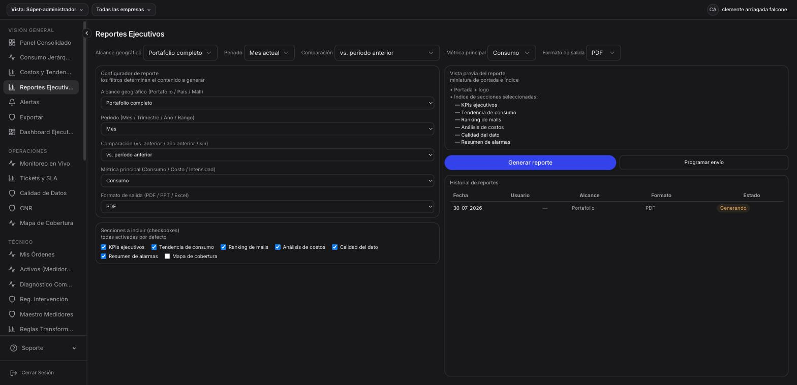
Reportes Ejecutivos: configurador con alcance (portafolio/pais/mall), periodo, metrica principal, formato (PDF/PPT/Excel). Vista previa del indice. Historial de reportes generados. Boton "Programar envio" para automatizacion.
Secciones disponibles
- KPIs ejecutivos
- Tendencia de consumo
- Ranking de malls
- Analisis de costos
- Calidad del dato
- Resumen de alarmas
- Mapa de cobertura
Formatos de salida
PDF (con portada y logo) | PPT (presentacion ejecutiva) | Excel (datos tabulares)
Vista consolidada de todas las alertas del portafolio. Muestra KPIs de alertas activas,
mapa geografico de incidencias, evolucion temporal y ranking de sitios problematicos.
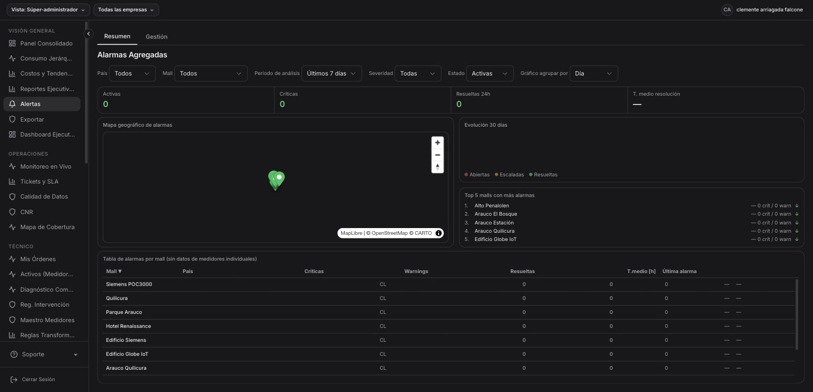
Alertas Agregadas: KPIs (activas, criticas, resueltas 24h, tiempo medio resolucion), mapa de alarmas, evolucion 30 dias (abiertas/escaladas/resueltas), top 5 malls con mas alarmas, tabla por mall con detalle.
Que muestra
- KPIs: alertas activas, criticas, resueltas en 24h, tiempo medio de resolucion
- Mapa geografico: distribucion de alarmas por ubicacion
- Evolucion 30 dias: grafico de abiertas vs escaladas vs resueltas
- Top 5 malls: ranking de sitios con mas incidencias
- Tabla por mall: criticas, warnings, resueltas, tiempo medio, ultima alarma
- Tabs: Resumen (vista general) y Gestion (acciones sobre alertas)
Filtros
Pais | Mall | Periodo de analisis | Severidad | Estado (activas/resueltas/todas) | Agrupacion temporal (dia/semana/mes)
Exportacion de datos tabulares con control de alcance segun perfil de usuario.
Permite seleccionar tipo de contenido, granularidad temporal y formato de salida.
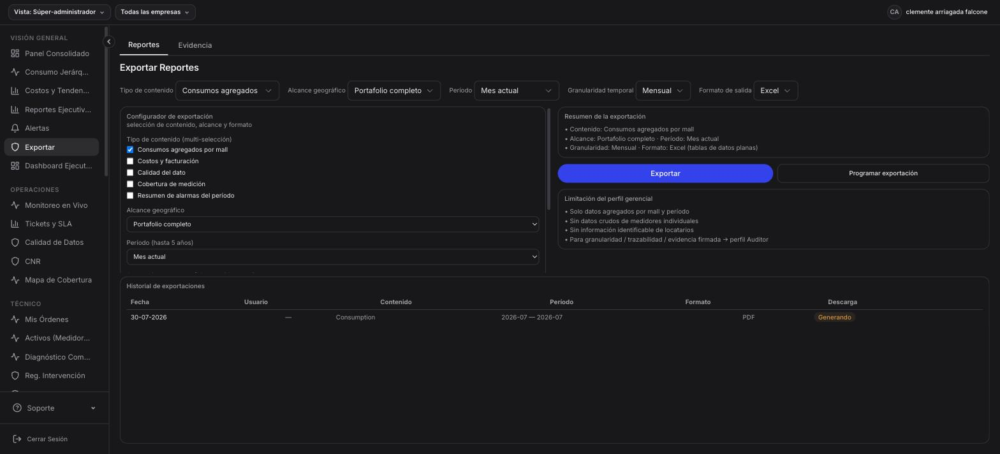
Exportar: configurador con tipo de contenido (consumos, costos, calidad, cobertura, alarmas), alcance geografico, periodo, granularidad (horaria/diaria/mensual), formato (Excel/CSV/PDF). Historial de exportaciones y limitaciones por perfil.
Tipos de contenido exportable
- Consumos agregados por mall
- Costos y facturacion
- Calidad del dato
- Cobertura de medicion
- Resumen de alarmas del periodo
Control de acceso
El perfil gerencial solo accede a datos agregados por mall y periodo. Para datos crudos de medidores individuales o trazabilidad firmada se requiere perfil Auditor.
Vista dedicada por empresa (tenant). Al seleccionar una empresa en el selector superior,
muestra KPIs, tendencias y metricas especificas de ese tenant.
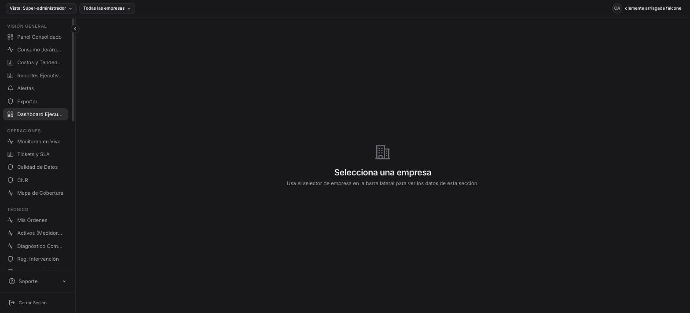
Dashboard Ejecutivo: requiere seleccionar una empresa en el selector de la barra lateral para ver datos especificos del tenant.
Funcionalidad
Presenta una vista ejecutiva personalizada por empresa, con KPIs de consumo, costos y operacion filtrados al scope del tenant seleccionado. Util para reuniones gerenciales donde se revisa una empresa a la vez.
Vista operacional en tiempo real del estado de comunicacion de todos los medidores.
Muestra que centros estan online, cuales tienen alertas, y el comportamiento de potencia en las ultimas 24h.
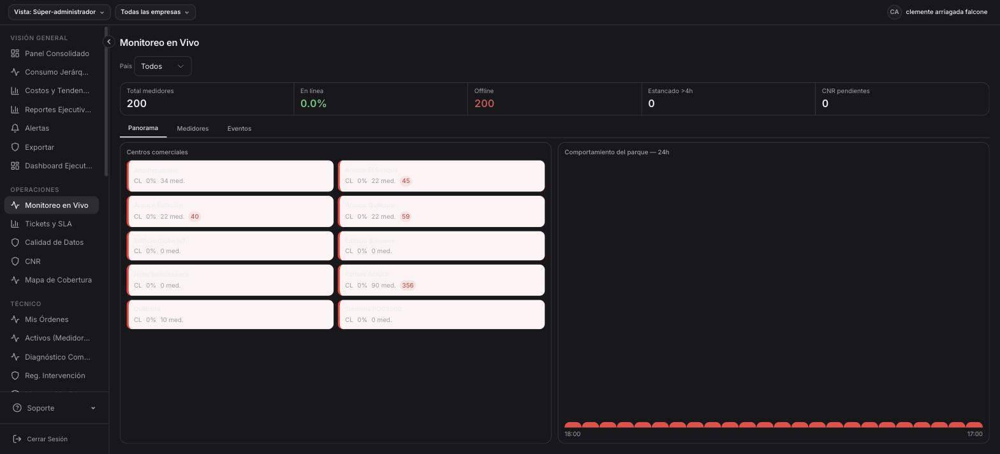
Monitoreo en Vivo: KPIs (total medidores, % en linea, offline, estancados >4h, CNR pendientes). Cards por centro comercial con semaforo de estado (verde/rojo) y conteo de alertas. Grafico de comportamiento del parque 24h a la derecha. Tabs: Panorama, Medidores, Eventos.
Que muestra
- KPIs globales: total medidores (200), % en linea, offline, estancados >4h, CNR pendientes
- Cards por centro: cada mall con semaforo de estado, cantidad de medidores y conteo de alertas activas
- Comportamiento 24h: grafico de potencia agregada del parque completo
- Tab Medidores: listado individual de cada medidor con estado
- Tab Eventos: log de eventos recientes (conexion/desconexion/alerta)
Sistema de gestion de tickets generados automaticamente por alertas. Controla cumplimiento de SLA
con metricas de uptime, disponibilidad y tiempo medio de resolucion.
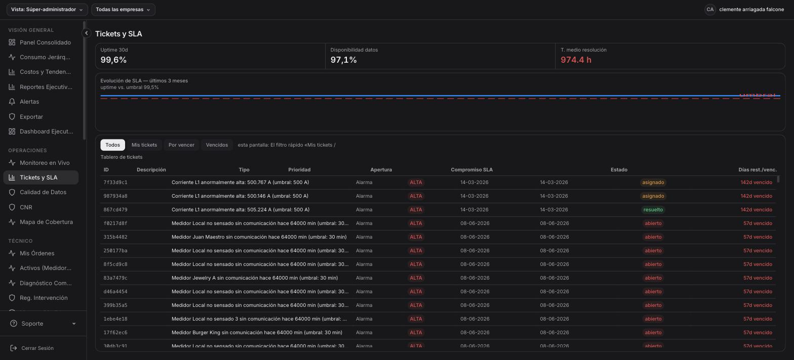
Tickets y SLA: KPIs (uptime 30d: 99.6%, disponibilidad datos: 97.1%, tiempo medio resolucion: 974.4h). Grafico de evolucion SLA vs umbral 99.5%. Tablero de tickets con ID, descripcion, tipo, prioridad, apertura, compromiso SLA, estado y dias restantes/vencidos.
Que muestra
- Uptime 30d: porcentaje de tiempo con medidores reportando
- Disponibilidad datos: % de lecturas recibidas vs esperadas
- Tiempo medio resolucion: promedio en horas desde apertura a cierre
- Evolucion SLA: grafico comparativo uptime vs umbral configurado (99.5%)
- Tablero de tickets: cada ticket con ID, descripcion, tipo (alarma/mantencion), prioridad, fechas, estado (abierto/asignado/resuelto/vencido)
Filtros
Todos | Mis tickets | Por vencer | Vencidos
Scorecard de calidad de lecturas por mall. Compara lecturas reales vs esperadas,
identifica lecturas estimadas por CNR y faltantes, con tendencia historica y drill-down por medidor.
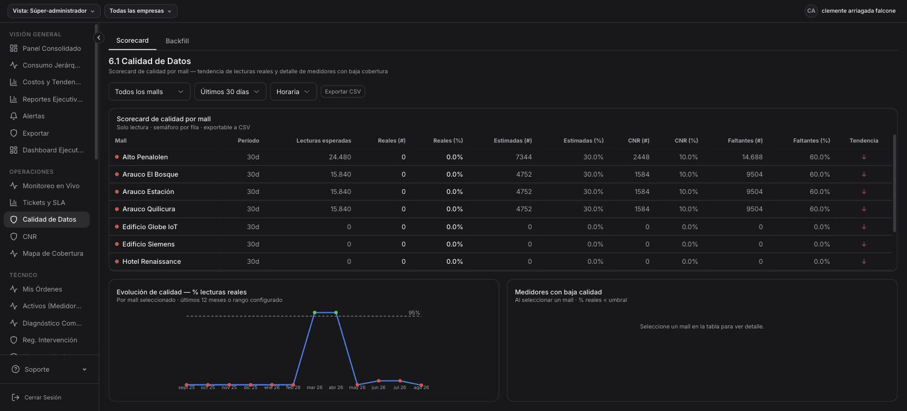
Calidad de Datos: scorecard por mall con columnas (lecturas esperadas, reales #/%, estimadas #/%, CNR #/%, faltantes #/%, tendencia). Grafico de evolucion de calidad (% lecturas reales) con umbral 95%. Panel de medidores con baja calidad al seleccionar un mall. Tabs: Scorecard y Backfill.
Que muestra
- Scorecard por mall: tabla con lecturas esperadas vs reales vs estimadas vs CNR vs faltantes
- Evolucion de calidad: grafico mensual de % lecturas reales con umbral 95%
- Medidores baja calidad: detalle de medidores bajo umbral al seleccionar un mall
- Tab Backfill: gestion de rellenado de huecos de datos
Filtros
Mall (todos/individual) | Periodo (ultimos 30 dias, personalizado) | Granularidad (horaria/diaria)
Gestion de Consumo No Registrado (CNR). Cuando un medidor deja de reportar, se genera un CNR
que debe ser investigado, asignado a un responsable y resuelto.
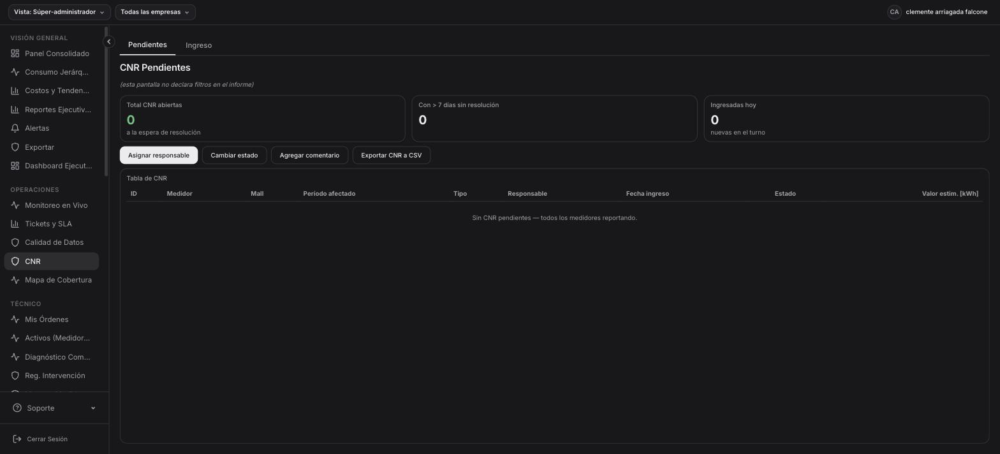
CNR Pendientes: KPIs (total abiertas, con >7 dias sin resolucion, ingresadas hoy). Acciones (asignar responsable, cambiar estado, agregar comentario, exportar CSV). Tabla de CNR con ID, medidor, mall, periodo afectado, tipo, responsable, fecha ingreso, estado, valor estimado kWh. Tabs: Pendientes e Ingreso.
Workflow CNR
- Deteccion automatica de medidor sin datos
- Creacion de registro CNR con periodo afectado y estimacion de consumo
- Asignacion a responsable tecnico
- Investigacion y documentacion
- Resolucion con valor real o estimado
- Exportacion a CSV para auditoria
Visualizacion geografica del estado de cobertura de medicion de todos los sitios.
Cada marker muestra el % de medidores online y cantidad de alarmas activas.
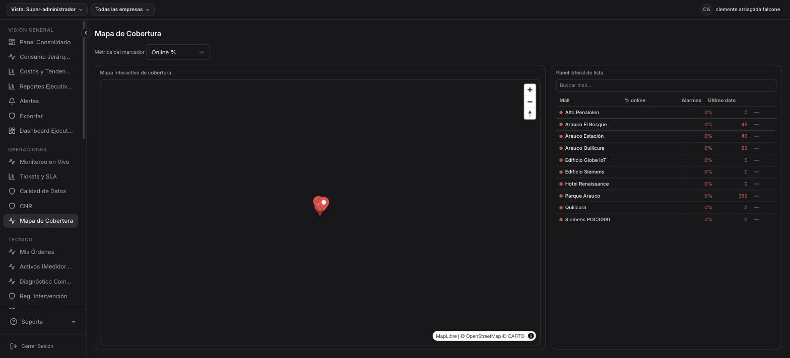
Mapa de Cobertura: mapa interactivo con markers de cada mall. Panel lateral con lista de malls mostrando % online, cantidad de alarmas y ultimo dato recibido. Filtro por metrica del marcador (Online %, Alarmas, Consumo).
Que muestra
- Mapa interactivo: markers coloreados por estado en cada ubicacion
- Panel lateral: lista de malls con % online, alarmas activas y timestamp del ultimo dato
- Busqueda: filtro rapido por nombre de mall
- Metrica del marcador: configurable entre Online %, Alarmas, Consumo
Sistema de ordenes de trabajo para tecnicos de campo. Cada alerta puede generar una orden de mantencion
que se asigna, ejecuta y cierra con evidencia.
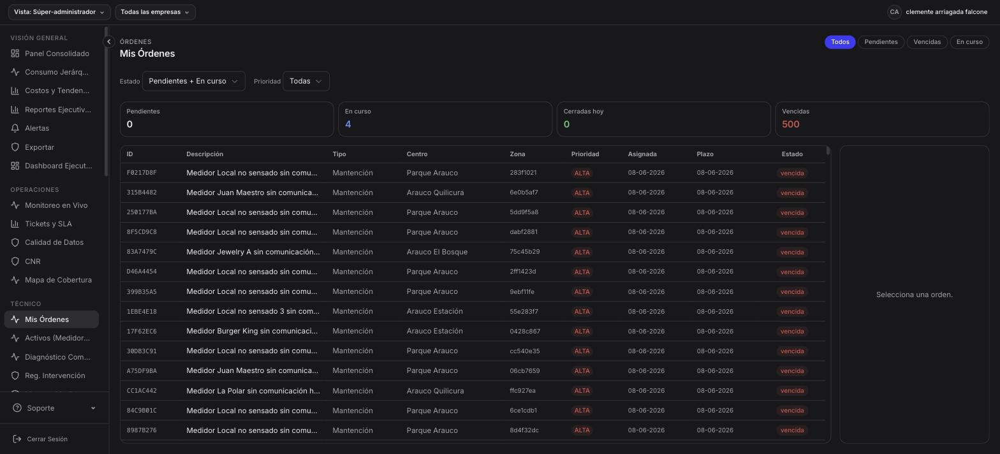
Mis Ordenes: KPIs (pendientes, en curso, cerradas hoy, vencidas). Tabla con ID, descripcion, tipo (mantencion), centro, zona, prioridad (ALTA/MEDIA/BAJA), fecha asignacion, plazo, estado (pendiente/en curso/vencida). Panel lateral de detalle al seleccionar. Filtros: Todos, Pendientes, Vencidas, En curso.
Estados de una orden
- Pendiente: creada pero no iniciada
- En curso: tecnico trabajando en la orden
- Cerrada: trabajo completado con evidencia
- Vencida: paso el plazo sin resolucion
Catalogo completo de medidores del portafolio. Muestra serial, estado de comunicacion,
protocolo y ultimo dato recibido para cada dispositivo.
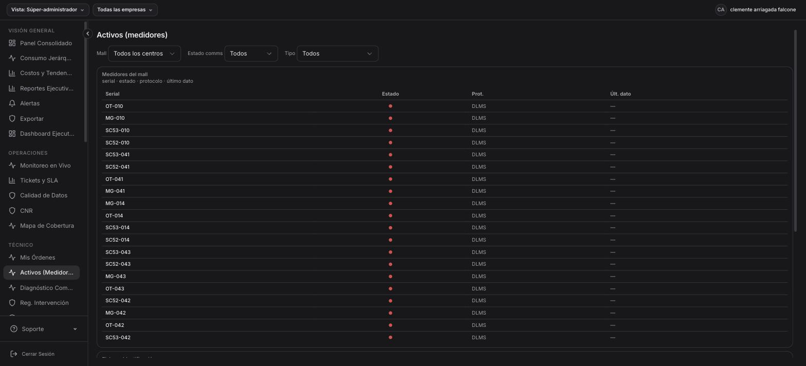
Activos (Medidores): listado de todos los medidores con Serial, Estado (semaforo rojo/verde), Protocolo (DLMS), y Ultimo dato recibido. Filtros por Mall, Estado comms (online/offline/todos), Tipo.
Que muestra
- Serial: identificador unico del medidor (ej: OT-010, MG-010, SC53-010)
- Estado: semaforo visual rojo (offline) / verde (online)
- Protocolo: tipo de comunicacion (DLMS, Modbus, etc.)
- Ultimo dato: timestamp de la ultima lectura recibida
Herramienta tecnica para diagnosticar problemas de comunicacion con medidores.
Muestra estado en tiempo real, tasa de exito, histograma de disponibilidad y herramientas de diagnostico activo.
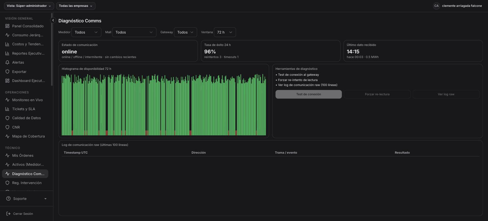
Diagnostico Comms: KPIs (estado online, tasa exito 24h: 96%, ultimo dato recibido). Histograma de disponibilidad 72h con barras verdes/rojas por hora. Herramientas: test de conexion al gateway, forzar re-lectura, ver log de comunicacion raw (100 lineas). Log raw con timestamp UTC, direccion, trama/evento y resultado.
Herramientas de diagnostico
- Test de conexion: ping activo al gateway del medidor
- Forzar re-lectura: solicita lectura inmediata fuera de ciclo
- Ver log raw: ultimas 100 lineas del log de comunicacion con timestamp, direccion, trama y resultado
- Histograma 72h: disponibilidad hora a hora con barras verdes (exitoso) y rojas (fallido)
Formulario de bitacora para registrar intervenciones tecnicas en medidores.
Cada registro queda firmado digitalmente y es inmutable una vez guardado.
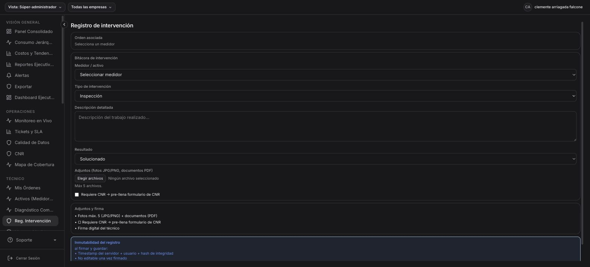
Registro de Intervencion: formulario con orden asociada, medidor/activo, tipo de intervencion (inspeccion/mantencion/reemplazo), descripcion detallada, resultado (solucionado/parcial/no solucionado). Adjuntos (max 5 fotos JPG/PNG + PDF). Checkbox "Requiere CNR". Inmutabilidad: timestamp servidor + usuario + hash de integridad, no editable una vez firmado.
Campos del registro
- Orden asociada: vinculacion a orden de trabajo existente
- Medidor/activo: selector del medidor intervenido
- Tipo: Inspeccion, Mantencion preventiva, Mantencion correctiva, Reemplazo
- Descripcion: texto libre del trabajo realizado
- Resultado: Solucionado, Parcial, No solucionado
- Adjuntos: hasta 5 archivos (fotos JPG/PNG, documentos PDF)
- Firma digital: inmutabilidad con timestamp + hash de integridad
Gestion de accesos del sistema. Permite crear usuarios, asignar perfiles y permisos,
ver historial de accesos y revocar permisos sin uso.
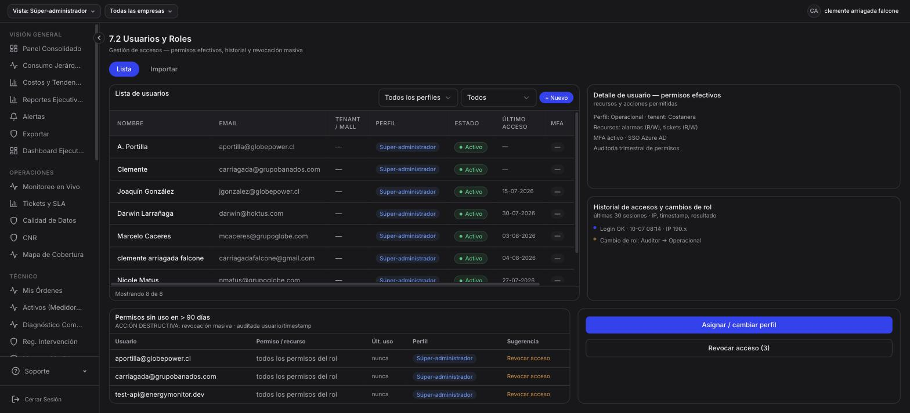
Usuarios y Roles: lista de usuarios con nombre, email, tenant/mall, perfil (Super-admin, Operacional, etc.), estado (activo/inactivo), ultimo acceso, MFA. Panel derecho: detalle de permisos efectivos del usuario seleccionado, historial de sesiones (IP, timestamp, cambios de rol). Seccion inferior: permisos sin uso >90 dias con sugerencia de revocacion masiva.
Funcionalidades
- Lista de usuarios: tabla con todos los usuarios registrados y su estado
- Detalle de permisos: panel lateral con recursos y acciones permitidas
- Historial de sesiones: ultimas 30 sesiones con IP, timestamp y resultado
- Revocacion masiva: permisos sin uso en >90 dias marcados para revocacion
- Importacion: carga masiva de usuarios via CSV
Administracion de las empresas (tenants) registradas en la plataforma.
Cada empresa tiene su slug, datos comerciales y estado.
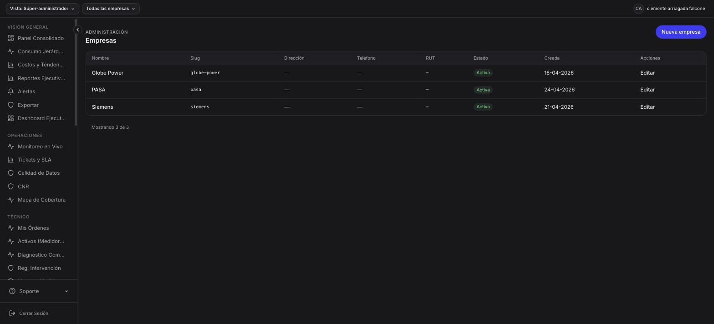
Empresas: tabla con Nombre, Slug, Direccion, Telefono, RUT, Estado (Activa), Fecha creacion, Acciones (Editar). Boton "Nueva empresa" para crear. 3 empresas registradas: Globe Power, PASA, Siemens.
Administracion de dispositivos IoT descubiertos via MQTT/IoT Core.
Auto-discovery: cuando un dispositivo Siemens se conecta por primera vez, aparece como "sin asignar"
y puede ser vinculado a un medidor del sistema.
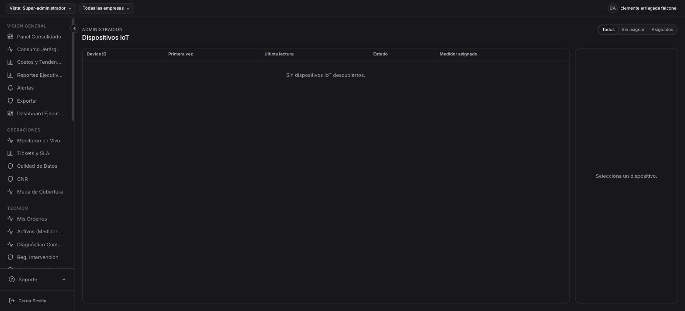
Dispositivos IoT: tabla con Device ID, Primera vez (fecha descubrimiento), Ultima lectura, Estado, Medidor asignado. Filtros: Todos, Sin asignar, Asignados. Panel lateral de detalle al seleccionar un dispositivo.
Flujo IoT
- Dispositivo Siemens POC3000 se conecta via MQTT a IoT Core
- Auto-discovery detecta el nuevo Device ID
- Aparece en la lista como "sin asignar"
- Administrador lo vincula a un medidor existente o crea uno nuevo
- A partir de la asignacion, las lecturas IoT se integran al sistema de monitoreo
Gestion multi-tenant: configuracion base de cada tenant, estadisticas de uso y
historial inmutable de cambios de configuracion. Solo visible para super-administradores.
Que muestra
- Lista de tenants: ID, nombre (mall), pais, estado (activo/onboarding), N medidores, N usuarios, fecha alta, version contrato
- Detalle de configuracion: parametros base del tenant seleccionado
- Estadisticas de uso: usuarios activos 30d, consultas API mensuales, volumen datos almacenados
- Historial de cambios: registro inmutable de quien cambio que, cuando, valor anterior y nuevo, con aprobacion
- Acciones: crear tenant, activar, desactivar
Tenants actuales
| Tenant | Estado | Medidores | Usuarios |
|---|
| Globe Power | Activo | 44 | 3 |
| PASA | Activo | 156 | 3 |
| Siemens | Onboarding | 0 | 2 |
Pagina de cuenta del usuario autenticado. Muestra datos personales,
configuracion de seguridad (MFA, Passkeys) y edificios asignados.
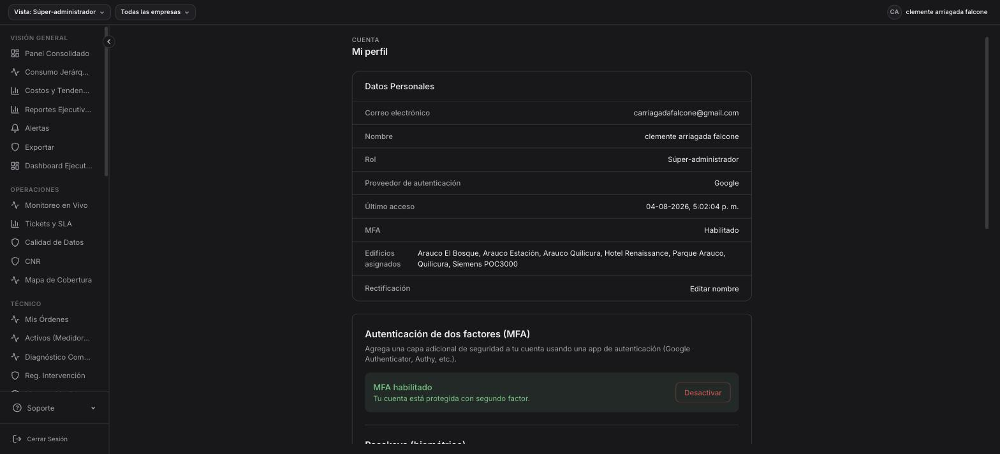
Mi Perfil: datos personales (email, nombre, rol, proveedor auth, ultimo acceso, MFA, edificios asignados). Seccion MFA con opcion de habilitar/deshabilitar TOTP. Seccion Passkeys para registrar autenticacion biometrica. Rectificacion de nombre (ARCO+).
Funcionalidades
- Datos personales: email, nombre, rol, proveedor de autenticacion, ultimo acceso
- Edificios asignados: lista de centros a los que tiene acceso
- MFA: activar/desactivar segundo factor (Google Authenticator, Authy)
- Passkeys: registrar/eliminar autenticacion biometrica (WebAuthn)
- Rectificacion: editar nombre (cumplimiento ARCO+)
Energy Monitor (EMS) v2.44.0 — Grupo Globe
Documentacion generada el 4 de agosto de 2026
power-monitor.cloud